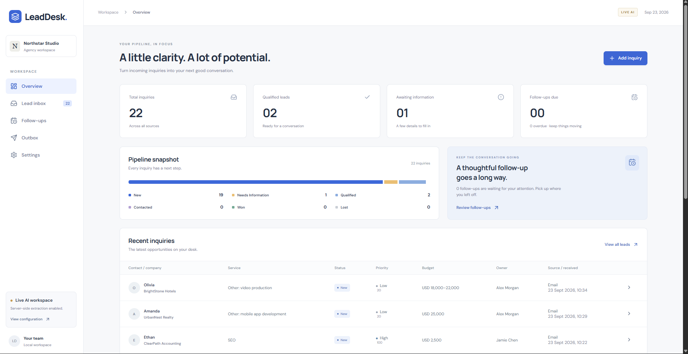

Applied AI · Product
LeadDesk — AI-powered inbound lead operations
Built an end-to-end system that turns unstructured customer inquiries into structured, reviewable opportunities. Gemini handles language understanding and contextual drafting; deterministic application logic handles qualification, budget thresholds, ownership, duplicate handling, and approval state.
Problem: incoming leads are manually read, qualified, routed, and followed up.
AI: extraction, service classification, clarification questions, and reply drafting.
Deterministic logic: evidence validation, qualification, budget rules, ownership, approvals.
Safety: prompt-injection resistance, grounded evidence, unsupported-service safeguards.
Workflow: receive → understand → qualify → route → respond → follow up.